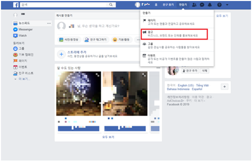
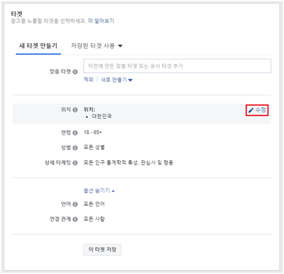
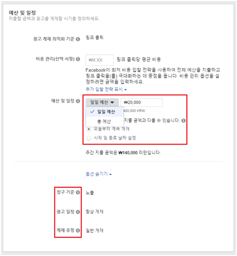

페이스북 광고 만들기
광고 제작에 앞서 페이스북에 접속하고 로그인합니다.
광고만들기 버튼을 선택하여 시작합니다.

광고 관리자에서 단계별 가이드 모드로 광고 만들기
1단계 : 캠페인 만들기
먼저 캠페인을 만들어야 합니다. 이 수준에서 캠페인의 전반적인 목표를 정의하게 됩니다.
1. 리스트에서 회원님의 비즈니스 목표와 가장 잘 부합하는목표를 선택합니다.
2. 캠페인 이름 텍스트 상자에 캠페인을 설명하는 이름을 입력합니다.
3. 이 수준에서 분할 테스트를 만들 수 있습니다.
4. 이 수준에서 캠페인 예산 최적화를 설정할 수 있습니다.
- 하루당 광고 세트에 지출할 평균 비용인 일일 예산을 설정합니다.
- 또는 광고 세트의 전체 기간 동안 지출할 금액인 총 예산을 설정합니다.
5. 캠페인 입찰 전략, 광고 일정 또는 게재 유형을 맞춤 설정하려면 옵션 더 보기를 선택합니다.
2단계 :광고 세트 만들기
캠페인을 만들면 광고 세트 만들기를 위한 단계로 넘어갈 수 있습니다. 광고 세트 수준에서는 타게팅, 노출 위치 등을 설정하게 됩니다.
1. 광고 세트 이름 텍스트 상자에 광고 세트를 설명하는 광고 세트 이름을 입력합니다.
2. 타겟을 정의합니다.
a. 맞춤 타겟을 선택하거나 만듭니다(선택 사항).
b. 위치, 연령, 성별 및 상세 타게팅에 커서를 가져간 후 <연필 아이콘 삽입> 아이콘을 선택하여 수정합니다.
c. 옵션 더 보기를 선택하여 언어 또는 연결 관계를 맞춤 설정합니다.
d. 나중에 사용하기 위해 이 타겟 저장을 선택합니다.

3. 광고 노출 위치를 선택합니다. 이는 Facebook, Instagram 또는 Audience Network 전반에서 광고를 노출하고자 하는 위치입니다.
- 자동 노출 위치를 선택합니다. 이렇게 하면 가장 성과가 좋을 것으로 예상되는 위치에 광고가 자동으로 게재됩니다.
- 광고 노출 위치를 수동으로 선택하려면 노출 위치 수정을 선택합니다.
옵션 더 보기를 선택하여 특정 모바일 기기 및 운영 체제 또는 콘텐츠 및 퍼블리셔 제외를 선택합니다.
광고 게재 최적화 기준에 커서를 가져간 후 <연필 아이콘 삽입> 아이콘을 선택하여 수정합니다.
- 드롭다운에서 원하는 게재 성과를 선택합니다.
예산을 설정합니다(캠페인 수준에서 캠페인 예산 최적화를 해제한 경우에만 적용됩니다).
- 하루당 광고 세트에 지출할 평균 비용인 일일 예산을 설정합니다.
- 또는 광고 세트의 전체 기간 동안 지출할 금액인 총 예산을 설정합니다.
시작 및 종료 날짜를 설정합니다.
옵션 더 보기를 선택하여 지출 한도, 청구 기준, 광고 일정 및 게재 유형을 맞춤 설정합니다.

3단계 :광고 만들기
캠페인과 하나 이상의 광고 세트를 만들면 광고 만들기를 위한 단계로 넘어갈 수 있습니다. 여기에서는 광고 크리에이티브를 선택하고 문구를 추가하게 됩니다.
1. 페이지를 선택합니다. 연결된 Facebook 페이지가 있어야 광고를 할 수 있습니다.미리 페이지에서 글 작성을 해 두신 분들은 [기존 게시물 사용]을 선택하면 됩니다.
2. 광고 형식을 선택합니다. 광고 형식을 '슬라이드', '단일 이미지 또는 동영상', '컬렉션' 등에서 선택합니다. '단일 이미지 또는 동영상' 형식을 선택한 경우 슬라이드쇼를 만들 수 있습니다.
3. 광고에 사용할 크리에이티브 또는 미디어를 선택합니다.
- 이미지 또는 동영상을 업로드하거나 이전에 업로드한 이미지 또는 동영상에서 선택하려면 '미디어 추가'를 선택합니다.
- 슬라이드쇼를 만들거나 동영상 템플릿을 사용하려면 '미디어 만들기'를 선택합니다.
4. 광고에 표시할 문구를 추가합니다.
- 이전 선택 사항에 따라 행동 유도 버튼을 추가하고 픽셀을 선택하는 등의 옵션도 있습니다.
5. 광고를 미리 보고 '확인'을 선택합니다.
- 광고가 각 노출 위치에 어떻게 표시될지 보려면 광고 미리 보기 옆에 있는 노출 위치 아이콘을 선택합니다.
- 다양한 노출 위치에 광고 크리에이티브를 맞춤 설정하려면 '광고 맞춤 설정'을 선택합니다.
- 맨 처음 주문 시 결제 정보를 입력하라는 메시지가 표시됩니다.
이제 캠페인이 진행됩니다(Facebook의 검토 대기 중). 검토를 거치지 않아도승인되는 즉시 캠페인이 공개됩니다.
광고 관리자에서 간편 제작 기능으로 광고 만들기
광고 관리자에서는 다음과 같은 간편 제작 워크플로에 따라 광고를 만들 수 있습니다.
1. 만들기를 클릭합니다.
2. 캠페인, 광고 세트, 광고 요소를 작성합니다. 단계별 가이드 모드 워크플로가 표시되면 수정 창 상단에 있는 간편 제작으로 전환을 선택합니다.
- 캠페인: 새 캠페인을 만들어 구매 유형과 캠페인 목표를 선택하거나 기존 캠페인을 선택할 수 있습니다.
- 광고 세트: 새 캠페인을 선택한 경우 새 광고 세트 만들기 옵션을 선택하거나 이 단계를 건너뛸 수 있습니다. 기존 캠페인을 선택한 경우 기존 광고 세트를 선택하거나 새 광고 세트를 만드는 옵션을 선택할 수 있습니다.
- 광고: 선택한 캠페인 및 광고 세트에 따라 새로운 광고를 만들거나 이 단계를 건너뛸 수 있습니다.
임시 저장을 선택합니다.
3. 수정 창에서는 왼쪽 탐색 창의 광고, 광고 세트 또는 캠페인 아이콘을 선택하여 원하는 순서대로 캠페인 요소를 수정할 수 있습니다.
- 캠페인: 캠페인 이름이나 목표, 구매 유형을 수정합니다. 캠페인 지출 한도를 설정할 수도 있습니다.
- 광고 세트: 광고 세트의 예산, 타겟, 노출 위치 및 가격을 수정합니다. 이 단계에서는 다이내믹 크리에이티브를 사용할 수 있습니다.
- 광고: '형식' 섹션에서 광고 형식을 선택합니다. 슬라이드, 단일 이미지나 단일 동영상(슬라이드쇼를 만들 수 있음) 또는 컬렉션을 선택할 수 있습니다. 일부 광고 형식 옵션은 캠페인 목표에 따라 다릅니다. 광고 만들기 섹션에서 이미지, 제목, 문구와 같은 크리에이티브 요소를 광고에 추가할 수 있습니다. '광고 이름' 필드에서 광고의 이름을 입력합니다.
4. 캠페인 상세 정보를 수정한 후에는 세 가지 옵션을 선택할 수 있습니다.
- 게시를 선택하여 캠페인을 즉시 게시합니다.
- 닫기를 선택하여 캠페인 상세 정보를 임시 저장합니다. 광고 관리자 기본 페이지의 작업 표시줄에서 검토 후 게시를 선택하여 나중에 초안을 수정하고 게시할 수 있습니다.
- 또는 임시 저장 삭제를 선택하여 모든 변경 사항을 삭제합니다.